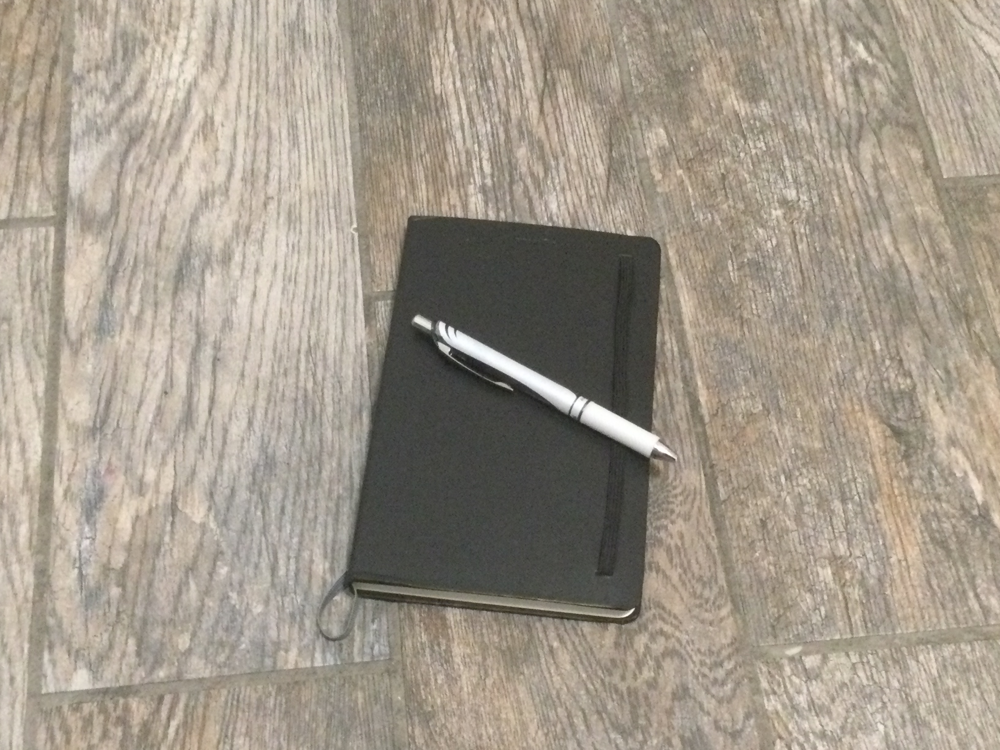

Introduction
Journaling is important for every young person's mental health. Journaling plays a good role in a young person's mental health. I want every young man to write on a piece of paper consistently. I do not recommend you journal on a computer, but if you have to, then fine you can journal on a computer but I heavily recommend you write with pencil/pen and paper. There are multiple types of journaling you can do and one of them that I do is gratitude journaling (Where you write what you're grateful for). In this article, I am going to explain what journaling is, the types of journaling you can do, and how you can journal.
What is journaling and how can I start? 
Journaling is the act of writing in a journal. You can start by writing what you are grateful for every day. This is called gratitude journaling. Gratitude journaling is important for every man's mental health. Not many people journal because they don't want to change their lives up. They'd rather spend their lives playing video games and doing all of the instant gratification activities.
You can also try writing down your schedule every day so you won't forget what you have to do. According to this article, journaling can help strengthen your memory. I used to think about the things I have to do in the morning in my head and then the next morning, I forget about the thing that I have to do. When I write down my daily schedule in my journal, I remember it more often. Start writing down to-do lists and your daily schedule.
Mental health benefits of journaling
The mental health benefits of journaling are amazing. According to this article from the University of Rochester Medical Center, journaling has amazing mental health benefits such as managing anxiety, reducing stress, and coping with depression. Journaling can also control your bad mental health symptoms according to that same study. I urge suggest everyone to stop reading this for a little bit, grab a piece of paper and start writing down what happened today. After you're done, come back to this article. In conclusion to this section, journaling has amazing mental health benefits.
When is it a great time to start journaling?
The best time to start journaling is right now. Today is the day that you improve your mental health and even improve your handwriting (Because you're writing everyday and you handwriting will get better). You know what they say, there is no better time than the present. You should start writing about your feelings in a notebook or a piece of paper right now. Do not procrastinate on this. If you consistently procrastinate on this, your mental health will not get better, so start right now.
.JPG)
Created by ElevenWater975
I want all young men to join me to become the top 1% of men. So many of us including me are down bad and this is normalized unfortunately. We all need to change. Join me on this self-improvement journey and together, we will make progress.
"Heeeeeeeee" - ICEcold JT